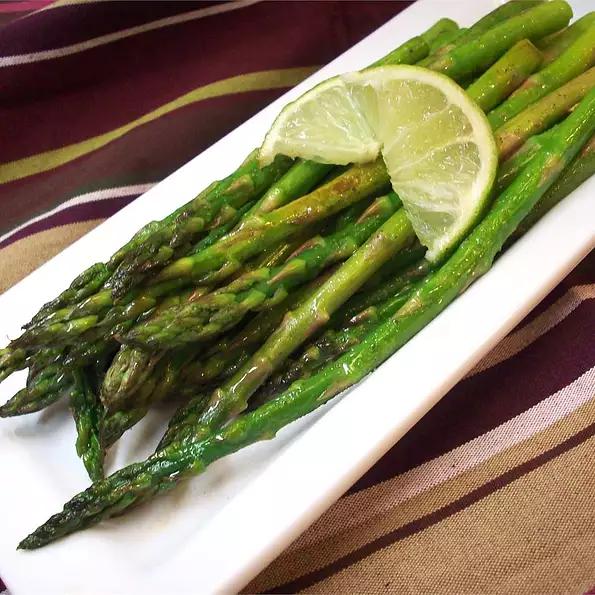

Garlic Asparagus with Lime

This fresh tasting asparagus dish is always popular. Try it with Havarti or Swiss cheese melted on top.
- 1 teaspoon butter
- 1 tablespoon olive oil
- 1 clove garlic, minced
- 1 medium shallot, minced
- 1 bunch fresh asparagus spears, trimmed
- 1/4 lime, juiced
- salt and pepper to taste
-
Melt butter with olive oil in a large skillet over medium heat.
-
Stir in garlic and shallots, and cook for 1 to 2 minutes.
-
Stir in asparagus spears; cook until tender, about 5 minutes.
-
Squeeze lime over hot asparagus, and season with salt and pepper.
-
Transfer to serving plate, and garnish with lime wedges.